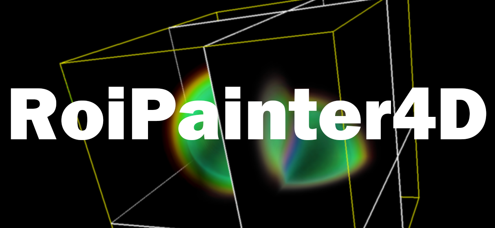

RoiPainter4D Visualization
RoiPainter4D I/O Visualization Segmentation Refinement
Visualization in RoiPainter4D
RoiPainter4Dでは，2つの可視化（Visualization）モードが使用可能です．
起動方法 : 『Menu > mode switch > to start visualization mode』をクリック
起動方法 : 『Menu > mode switch > to start visualization mode』をクリック
Visualization Normal
基本のVisualizationモード．入力データを観察するモード．

|
Size : 3次元画像の解像度 Pitch : ボクセルのサイズ(mm)，修正可能 WinLv : 画素値のWindow level (maxとminを指定するとその間が線形補間するようなトーンマッピングが行なわれます) check box - frame : 枠表示の有無を指定 check box - volume : volume renderingの有無を指定 check box - pseudo : 疑似カラー表示の有無を指定 check box - indicator : 画面左下のカメラ方向インジケータ表示の有無を指定 Plane xy/yz/zx 平面スライス表示の有無を指定 BackGround whilte/black/gray 背景色を指定 Opacity : volume renderingの透明度を指定 Num of slice : volume rendering時の平面数を指定（多いほど計算が重いが綺麗） ヒストグラムが表示されたグラフ : このグラフからは伝達関数の指定が可能．横軸が輝度値，縦軸が不透明度に対応しており，L-dragでグラフの形状を修正可能． frame スライダーにより表示するフレーム（時間）を指定． ＊このダイアログはすべてのモード共通です． |
Visualization Mask
領域分割により作成したマスクデータを観察するためのモード．
登録したマスクデータを確認したり，各マスクの色・透明度を変えたり，各マスク領域の修正をしたり出来る．
|
d1. Mask list: 登録したマスク情報が表示される．マウスクリックによりマスクを選択できる． d2. Checkbox Lock : 選択したマスクのロック設定．ロックをonにすると領域分割作業中にそのマスク領域は変更されなくなる．offにするとそのマスク領域を侵食するような領域分割が可能となる．デフォルトはON． d3. color : 選択したマスクの色を変更できる． d4. alpha : 選択したマスクの透明度を指定できる． d5. DELETE button : 選択したマスクを削除できる． d6. MARGE TO button : 選択したマスクを他のマスクと統合できる． d7. Mask operation : 選択したマスクを加工できる． erode : 縮退処理，dilate：膨張処理, fillhole: 中空領域を埋める，exp obj: \.obj形式で書き出し this frame は，現在フレーム（時間）のみに適用される． all frames は, 全フレームにその処理が出来要される． |